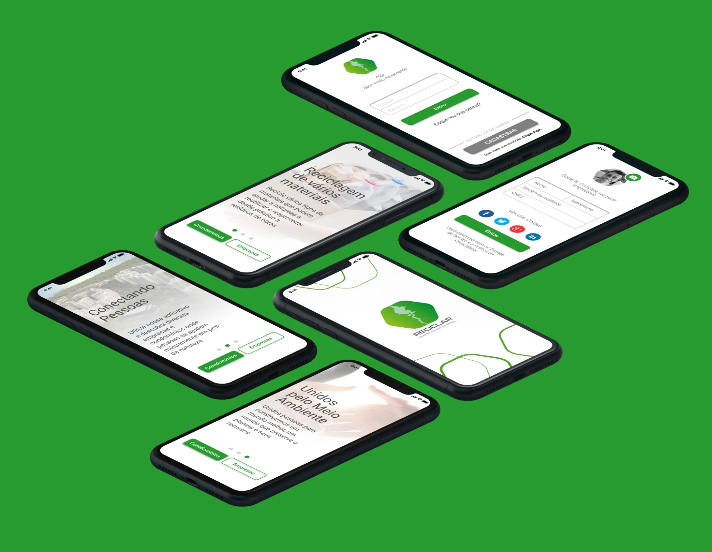
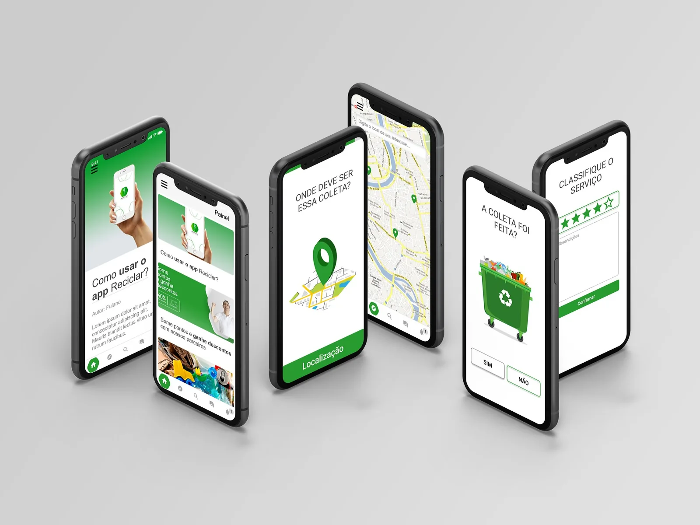
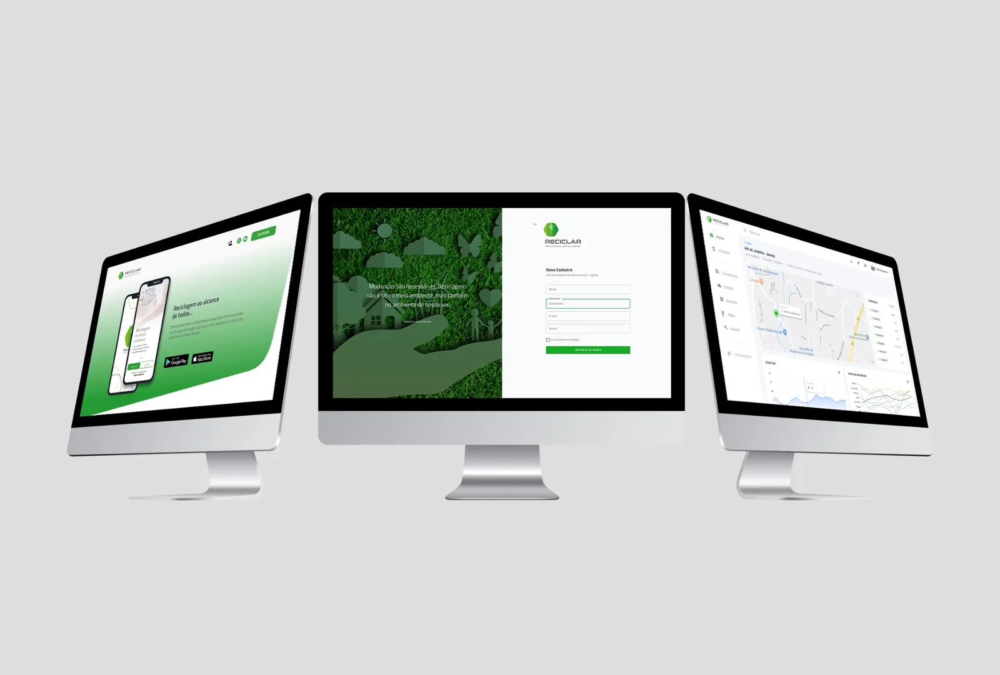
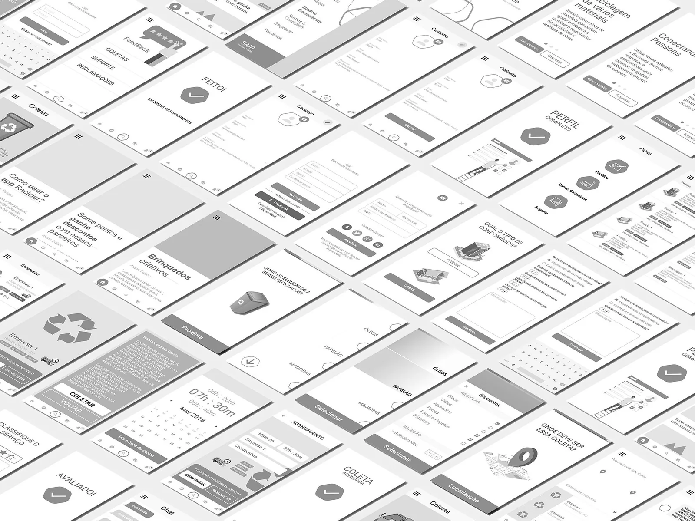
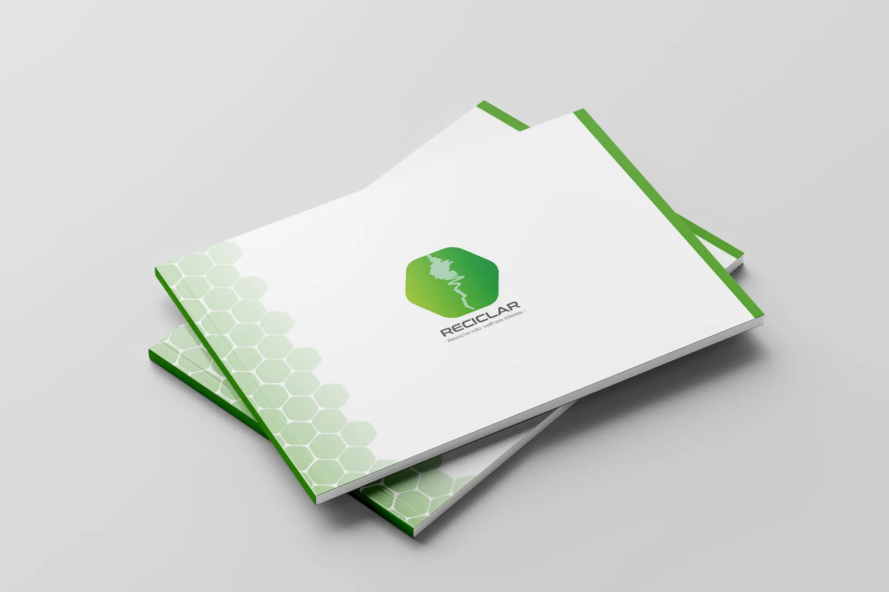
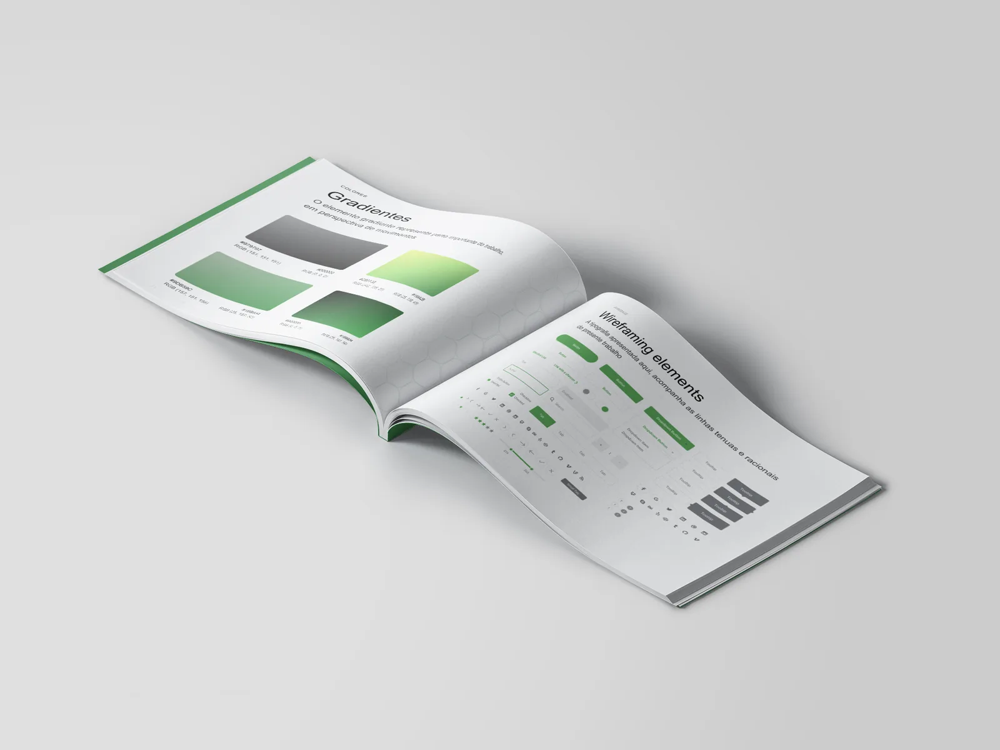
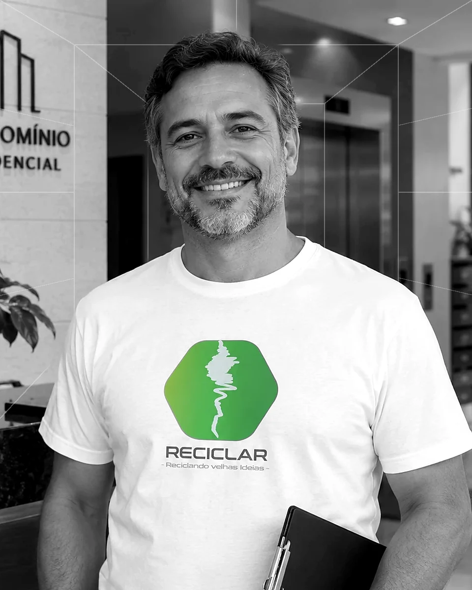

Reciclar
Projetando conexões para uma economia circular: transformar a reciclagem em uma experiência de conexão entre pessoas, condomínios e empresas.






Aplicativo Reciclar — identidade, onboarding, segmentação de entrada, login e cadastro.
Contexto
O Reciclar parte de uma constatação de design: uma intenção socialmente positiva não se transforma automaticamente em uma ação simples. A experiência busca aproximar pessoas e organizações por meio de uma plataforma digital dedicada à reciclagem. O desafio não é apenas criar telas, mas esclarecer papéis, reduzir barreiras de participação e fazer com que diferentes públicos encontrem valor na mesma rede.
A reciclagem envolve decisões cotidianas, informação sobre materiais e coordenação entre quem descarta e quem recebe resíduos. Nas telas, a proposta se materializa em um aplicativo móvel com narrativa de sensibilização ambiental, autenticação e caminhos de entrada específicos para “Condomínios” e “Empresas”.
- Setor
- Sustentabilidade · reciclagem
- Organização
- Reciclar (aplicativo móvel)
- Período
- Não informado
- Meu papel
- Pesquisa em UX · Discovery · Estratégia de produto
Problema
Como converter interesse pela sustentabilidade em participação efetiva?
Pessoas e organizações chegam à reciclagem com objetivos, recursos e níveis de conhecimento distintos; uma interface única e indiferenciada pode dificultar o começo, a compreensão do serviço e a continuidade do uso. O produto precisa ser claro para públicos heterogêneos sem perder coerência.
Pergunta de pesquisa
Questão central
Como podemos facilitar a entrada de moradores, condomínios e empresas em uma experiência digital de reciclagem, tornando compreensíveis seus papéis, os benefícios da participação e os próximos passos?
- Q.01Como tornar compreensíveis os papéis de cada participante?
- Q.02Como comunicar os benefícios da participação?
- Q.03Como indicar os próximos passos a quem chega ao serviço?
Partes interessadas
Participantes contemplados pela proposta: pessoas interessadas em reciclar, condomínios, empresas e a equipe responsável pelo serviço digital. Como atores potenciais do ecossistema, cooperativas, catadores e operadores de coleta exigiriam investigação própria antes de serem incluídos como participantes efetivos do produto.
Persona: síndico(a) de condomínio, um dos atores diretos do projeto. O perfil aparece no cadastro do aplicativo (“Síndico ou residente”).

Síndico(a) de condomínioParte interessada diretaMetodologia
- 01
Entender - 02
Explorar - 03
Conectar - 04
Projetar - 05
Validar
| Método | Objetivo | Base de análise | Etapa |
|---|---|---|---|
| Segmentação de públicos | Identificar as necessidades de cada perfil | Pessoas, condomínios e empresas | Entender |
| Mapeamento de fluxos | Descrever a jornada de entrada no aplicativo | Onboarding, acesso e cadastro | Explorar |
| Leitura do ecossistema | Compreender as relações entre os participantes | Atores diretos e potenciais | Conectar |
| Avaliação heurística | Avaliar a clareza das telas e da proposta de valor | Telas apresentadas | Validar |
O enquadramento de Discovery considera necessidades por perfil, jornada de entrada, relações entre participantes e proposta de valor. A pesquisa usou 3 tipos de pesquisa e entrevistou 10 associações de moradores; testes e workshops específicos não foram informados.
Pesquisa
Números da pesquisa
108
Telas do projeto
3
Tipos de pesquisa
10
Associações de moradores entrevistadas
As perguntas relevantes de pesquisa em UX são: o que motiva cada perfil a participar? Que informações precisam estar claras antes do cadastro? Quais incertezas impedem a primeira ação? E como a plataforma pode comunicar o valor da conexão entre pessoas e organizações?
Números informados pelo autor: 108 telas no projeto, 3 tipos de pesquisa e 10 associações de moradores entrevistadas. As perguntas estabelecem a agenda de investigação; horas de campo e roteiros das entrevistas não foram informados.
Evidências
“Reciclagem de vários materiais”
E.01 — Onboarding · tela 1
“Conectando Pessoas”
E.02 — Onboarding · tela 2
Duas rotas de entrada, “Condomínios” e “Empresas”, presentes nas telas de onboarding
E.03 — Observação
“Unidos pelo Meio Ambiente”
E.04 — Onboarding · tela 3
“Olá! Bem-vindo novamente”: acesso com e-mail e senha, recuperação de senha e atalho para cadastro
E.05 — Tela de acesso
“Quase lá. Complete seu perfil empresarial”, com os campos “Síndico ou residente” e “CNPJ”
E.06 — Tela de cadastro
As telas evidenciam a arquitetura inicial de interação e a intenção de segmentar jornadas. A imagem, por si só, não documenta volume de usuários, operação de coleta ou métricas de adoção.
Descobertas
- I.01
O valor de uma plataforma multilateral depende de explicitar, desde o início, para quem ela existe e o que cada participante pode realizar.
Evidências · E.02 · E.03
- I.02
A separação das rotas “Condomínios” e “Empresas” indica uma decisão de experiência coerente com necessidades potencialmente diferentes.
Evidências · E.03 · E.06
- I.03
O discurso ambiental funciona como motivador; a clareza operacional é o que pode transformar motivação em ação.
Evidências · E.01 · E.04
Jornada / Ecossistema
Curva ilustrativa da experiência esperada, sem dados medidos. As etapas posteriores — solicitação, contato, coleta, acompanhamento e retorno — são possibilidades do serviço que não podem ser confirmadas apenas pelas telas.
Oportunidades
- O.01 · I.02
Como podemos tornar o início mais contextual para cada perfil?
- O.02 · I.01
Como podemos explicar o benefício de cada tipo de conta?
- O.03 · I.03
Como podemos aproximar a comunicação inspiracional de instruções práticas sobre materiais, especialmente para quem chega sem familiaridade?
- O.04 · I.01
Como podemos tornar visível o progresso das interações?
Impacto
Números de impacto
15
Condomínios aderiram ao programa de reciclagem · adoção
2
Associações de moradores aderiram ao programa · adoção
O Reciclar saiu do protótipo e chegou à operação: 15 condomínios e 2 associações de moradores aderiram ao programa de reciclagem. Para o negócio, a adesão valida o foco em condomínios, onde cada adesão envolve várias unidades de uma vez, e aponta as associações como um canal coletivo para ampliar o alcance. A experiência digital foi o meio; a adesão é o resultado.
Volume reciclado e eficiência operacional não foram informados e ficam fora destes resultados. As 108 telas, os 3 tipos de pesquisa e as 10 associações entrevistadas são números da pesquisa, no capítulo 06.
Entregáveis
- ENT.01
Identidade do aplicativo: a marca Reciclar e a tela de abertura
Formato · identidade visual e interface · Implantação não informada
- ENT.02
Onboarding em três telas, com rotas de entrada para Condomínios e Empresas
Formato · interface mobile · Implantação não informada
- ENT.03
Telas de acesso e cadastro, com perfil empresarial e vínculo de contas
Formato · interface mobile · Implantação não informada
Recomendação
| Frente | Recomendação | Indicador | Base |
|---|---|---|---|
| F1 | Propostas de valor específicas para cada perfil, com introdução curta e objetiva e linguagem acessível | Ativação por perfil | O.01 · O.02 |
| F2 | Identificação das próximas ações em cada etapa e orientação prática sobre os materiais | Conclusão do cadastro e primeira interação útil | O.03 · O.04 |
| F3 | Mecanismos de confiança sobre participantes e destinação dos materiais | Recorrência de participação | I.01 |
Em uma evolução do produto, esses indicadores permitiriam acompanhar se a clareza introduzida no início se converte em participação.
Aprendizados
O que aprendi
Projetar para sustentabilidade é projetar relações, não apenas interfaces.
O que levo adiante
Quando um produto atende públicos distintos, o esforço mais importante consiste em revelar dependências, reduzir ambiguidades e explicar por que participar da rede gera valor para cada ator.